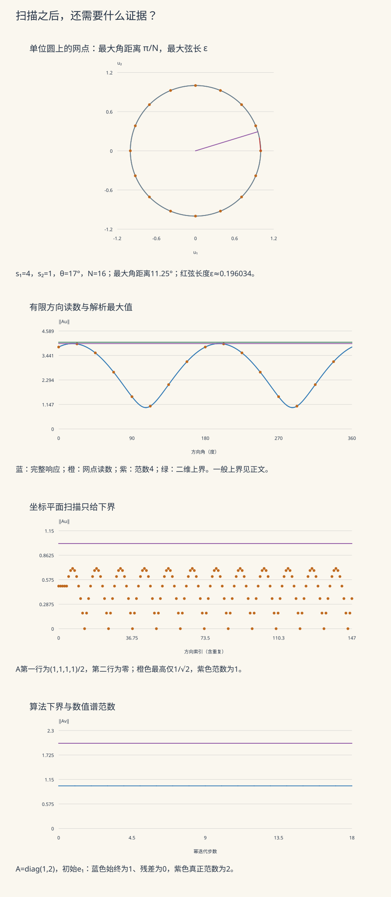

本页目录
高维概率 III · ε-网与随机矩阵的谱界
前置：亚高斯集中、随机向量与各向同性，以及欧氏范数、矩阵乘法和对称矩阵的谱定理。下文会补出本页需要的网论证。
本页的问题：一台线性装置把输入 \(u\) 变成 \(Au\)。试过许多输入之后，怎样保证没有漏掉最容易被放大的方向？本页先给一个可以完整证明的二维实验，再把“有限扫描”升级为高维概率界，最后用它证明协方差估计的样本量结论。
先看一个会漏检的测量
如果只把标准基向量输入 \(A=\begin{pmatrix}1&1\\0&0\end{pmatrix}\)，两次读数都是 \(1\)；但沿 \(u=(1,1)/\sqrt2\) 输入，读数是 \(\sqrt2\)。最大放大率不是“最大一列的长度”，而是
这里输入和输出都用欧氏范数；矩阵有限维，单位球面紧且 \(u\mapsto\|Au\|\) 连续，因此最大值能达到。只试有限方向，得到的是下界。要反过来给上界，必须知道每个未试方向离某个已试方向有多远。
可以检查的二维模型
令 \(s_1\ge s_2\ge0\)，以 \(\theta\) 表示最大拉伸方向，取
旋转不改变长度，所以
圆上均匀放置 \(N\) 个方向，角间距是 \(2\pi/N\)。任意方向到最近网点的角距离至多 \(\pi/N\)，单位圆上对应的弦长至多
记扫描最大值为 \(L_N\)。一般的网引理给出第一个上界；二维模型还能利用最接近最大奇异方向的网点，给出第二个：
第二式来自 \(\|Au_\phi\|\ge s_1|\cos(\phi-\theta)|\)。这里的覆盖证明来自角间距，曲线上的密集像素不承担证明责任。取 \(N=4,8,16,\ldots\) 时网点嵌套，所以 \(L_N\) 不减；对任意两张不嵌套的网，仅比较方向数量并不能保证下界不减。

先预测，再揭示实验
先判断：扫描最大值是上界还是下界？角度加密能否补上四维方向？残差为零是否必然找到了最大特征值？一次种子实验能否决定高概率定理的通用常数？
无需 JavaScript 的默认账本。二维模型取 s₁=4、s₂=1、θ=17°、N=16。以下数值为浮点近似，范数等于 4 和覆盖公式则是解析结论。
| 读数 | 数值 | 含义 |
|---|---|---|
| 矩阵第一行 | [3.82521902, 1.16948682] | A 的第一行 |
| 矩阵第二行 | [-0.292371705, 0.956304756] | A 的第二行 |
| 解析范数 | 4 | 等于大奇异值 |
| 方向数 | 16 | 整圆均匀分布；角间距22.5° |
| 最大角距离 | 11.25° | 任意方向到最近网点 |
| 覆盖半径 | 0.196034281 | 单位圆弦长 |
| 扫描下界 | 3.98273824 | 所有网点读数的最大值 |
| 一般上界 | 4.95386575 | L/(1−ε) |
| 二维上界 | 4.06076469 | L/cos(π/N) |
| 四维遗漏 | 1/√2 ≈ 0.707106781 | 真正范数为1，扫描加密仍漏方向 |
| 幂迭代盲点 | 下界1，残差0 | 真正范数为2；第0–18步均停在e₁ |
改变参数后，实验显示实际矩阵、所有圆上网点、每个矩阵像，以及所有加密层级。第二个模式保留高斯、随机符号、Wigner、二阶矩、相关与重尾预设，并加入两个确定反例。每个模式都可以查看全部特征向量、残差、幂迭代步骤与扫描方向。
数值实验的责任范围
实验以 32 位线性同余发生器固定样本，seed=0 也是独立保留的合法输入；均匀数取 \((\mathrm{state}+1/2)/2^{32}\)。Box–Muller 等变换产生的是有限精度伪随机样本。固定 seed 帮助复算，不构成独立性或连续分布的证明。
小矩阵模式中，以 \(T=A^\top A\) 做 Jacobi 特征分解和幂迭代；二阶矩模式直接以 \(T=S\) 迭代。Jacobi 栏显示数值特征对、停止阈值、非对角余量与正交误差。原始特征值保留符号，若理论半正定矩阵出现极小负值，应结合计算尺度检查舍入。它们是数值诊断，不能冒充严格的区间误差证书。
每步单位向量 \(v_k\) 的 \(\|Av_k\|\) 都是范数下界。残差
衡量当前向量是否接近某个特征向量，并不自动识别最大的那个。实验中零迭代像会明确停止，不能将零向量归一化，也不能编造后续轨迹。
1. 从有限方向得到整个球面的控制
网点的数量从哪里来
\(\mathcal N\subset S^{n-1}\) 称为欧氏 \(\varepsilon\)-网，指每个球面点到某个网点的距离不超过 \(\varepsilon\)。当 \(\varepsilon>0\) 时存在
证明时不断选取与已有点距离都大于 \(\varepsilon\) 的球面点。以这些点为中心、半径 \(\varepsilon/2\) 的开球两两不交，且全在半径 \(1+\varepsilon/2\) 的大球中。比较 \(n\) 维体积，
这个有限上界使选点过程必须终止。终止时若仍有球面点离全部网点超过 \(\varepsilon\)，就还能继续选，矛盾。因此它确实覆盖球面。进一步简写为 \((3/\varepsilon)^n\) 时，要有 \(0<\varepsilon\le1\)。
单网引理：一步一步补上漏掉的方向
设 \(L=\max_{u\in\mathcal N}\|Au\|\)，\(0<\varepsilon<1\)。取达到算子范数的 \(u_*\)，找 \(u_0\in\mathcal N\) 使 \(\|u_*-u_0\|\le\varepsilon\)。由三角不等式和算子范数定义，
移项得到
当 \(\varepsilon=1/4\)，常数可取 \(4/3\)；取较松的 \(2\) 也对，但应知道损失来自哪里。
双网与对称二次型
对 \(A\in\mathbb R^{m\times n}\)，输入 \(u\in S^{n-1}\)，输出测试方向 \(v\in S^{m-1}\)，有
分别取两个球面的 \(\varepsilon\)-网，令 \(u_0,v_0\) 为最近网点。精确分解
说明误差至多 \(2\varepsilon\|A\|\)。因此当 \(\varepsilon<1/2\)，
对称方阵 \(B\) 则由谱定理得到 \(\|B\|=\max_{\|u\|=1}|u^\top Bu|\)。使用
即可用同一个网和同一个 \(1/(1-2\varepsilon)\) 常数控制二次型。绝对值不能省：负特征值的绝对值也可能决定算子范数。
2. 随机矩阵：用尾概率支付方向数量
假设 \(A_{ij}\) 独立、均值为零，且 \(\|A_{ij}\|_{\psi_2}\le K\)。这里
存在与维数无关的正常数 \(C,c\)，对任意 \(t>0\)，
右侧大于 1 时不提供有用概率保证；它仍是一个成立的上界。证明分三步。
固定方向。取确定的单位向量 \(u,v\)，
独立中心亚高斯量的线性组合仍为亚高斯，尺度至多常数倍的 \(K\)，故 \(\mathbb P\{|Z|>s\}\le2e^{-cs^2/K^2}\)。不能把 \(u,v\) 换成已经观察矩阵后挑出的随机最大方向，再直接沿用这个固定方向尾界。
统一控制。预先取两个 \(1/4\)-网，大小分别至多 \(9^n,9^m\)。并集界不要求网点事件彼此独立，给出
回到连续球面。取 \(s=(K/\sqrt c)\sqrt{(m+n)\log9+t^2}\)，再乘双网引理的常数 2。利用 \(\sqrt{m+n}\le\sqrt m+\sqrt n\) 并合并绝对常数，就得到定理。维数代价来自网点数的对数，而不是一句模糊的“随机抵消”。
若条目是真正的独立标准高斯，固定方向的 \(Z\) 恰为 \(N(0,1)\)，可使用明确的尾界 \(2e^{-s^2/2}\)，于是这个较松但常数明确的结论是
这与更精细的 \(\sqrt m+\sqrt n\) 边缘结果不是同一个精度的结论；一张模拟矩阵不能决定所有维数与所有允许分布共用的 \(C\)。
确定界与分布假设
对每个有限矩阵始终有
只有逐项 \(|A_{ij}|\le1\) 时，最后才能简化成 \(\sqrt{mn}\)。高斯条目无界，不能省去最大条目因子。全 1 矩阵达到 \(\sqrt{mn}\)，也说明有方向结构的矩阵可以远离根号级的 iid 典型尺度。
相关预设每行共享一个随机量，且具有非零均值，故同时违反独立条目和中心化条件。重尾预设使用随机符号乘上 Pareto 型幅度，尾指数 \(3/2\)，理论方差无穷；有限伪随机实现有最大可生成值，这不使它成为上述理论模型的亚高斯样本。
3. 三种谱对象不要混用
| 对象 | 归一化 | 渐近谱信息 | 本页小实验能说明什么 |
|---|---|---|---|
| Wigner 对称矩阵 | 上三角独立中心变量，非对角方差 1，再除以 √n | 适当矩条件下经验特征值分布趋向半圆律 | 可检查有符号特征值与范数；不能用 n≤8 证明极限 |
| 矩形 iid 矩阵 A | 条目方差 1，不先缩放 | 范数具有 √m+√n 的典型尺度；精细边缘需相应假设 | 可以比较同一矩阵的多种数值下界与谱计算 |
| 二阶矩 S=XᵀX/m | m 行样本、n 个特征 | n/m→y>0 时的 MP 分布；连续部分端点为 (1±√y)² | 精确代数关系 ‖S‖=‖X‖²/m；有限样本边缘会波动 |
以一个明确充分的模型理解极限即可：Wigner 的独立非对角标准高斯和独立有界方差高斯对角，或 iid 标准高斯的 \(X\)。实验的 Wigner 对角与非对角都按 \(1/\sqrt n\) 缩放，属于 Wigner 模型，但不是对角方差为非对角两倍的标准 GOE 规范。
整体分布收敛不排除极少数离群点。经验谱测度是 \(\mu_n=n^{-1}\sum_{j=1}^n\delta_{\lambda_j}\)。把一个特征值改成 \(n\)，任意有界测试函数的平均值最多改变 \(2\|f\|_\infty/n\)，弱极限不变，最大特征值却发散。因此半圆律本身不保证谱边缘；Bai–Yin 型边缘控制要另核矩条件和矩阵模型。
当 \(y=n/m>1\) 时，MP 分布在 0 的原子质量为 \(1-1/y\)。有限维原因已经可见：\(\operatorname{rank}(X^\top X)\le m<n\)，故至少 \(n-m\) 个零特征值。实验的 \(S\) 没有减样本均值：总体均值为零时它是协方差估计；否则估计的是二阶矩。若改成扣样本均值再除以 \(m-1\) 的无偏样本协方差，秩至多 \(m-1\)，归一化也随之改变。
4. 协方差估计：每个方向上的方差都要准确
令 \(X_1,\ldots,X_m\in\mathbb R^n\) 为独立同分布、中心、各向同性随机向量：
同一向量的坐标可以相关；此处需要的是各行样本独立，以及所有方向统一的亚高斯条件。令 \(\widehat\Sigma=m^{-1}\sum_iX_iX_i^\top\)。固定单位方向 \(u\)，其方差估计误差为
因为 \(\|Z^2\|_{\psi_1}=\|Z\|_{\psi_2}^2\)，且减均值只增加常数倍尺度，\(Y_i\) 是中心亚指数量，\(\|Y_i\|_{\psi_1}\le CK^2\)。Bernstein 不等式给出
对 \(9^n\) 个网点取并集，再用对称二次型引理。令 \(q=n+t^2\)，选择 \(a=C_0K^2(\sqrt{q/m}+q/m)\)；其平方段与线性段都能使指数至少为常数倍的 \(q\)。取足够大的 \(C_0\)，抵消 \(n\log9\) 后得到
要使误差至多 \(\varepsilon\in(0,1]\)、失败概率至多 \(\delta\in(0,1)\)，取 \(t^2=\log(2/\delta)\)。一个充分样本量是
根号项和线性项必须同时检查。将 \(K\) 当作固定常数时才可省略 \(K^4\)；“样本量约等于维数”仅表示常数误差、固定置信度和固定尾部尺度。
这个误差控制所有单位方向上的方差。若 \(\varepsilon<1\)，\(\widehat\Sigma\) 的特征值位于 \([1-\varepsilon,1+\varepsilon]\)，于是可逆，条件数至多 \((1+\varepsilon)/(1-\varepsilon)\)。要进一步保证 PCA 的特征向量准确，还需要总体特征值之间的间隙；方差接近不等于每个主方向可辨识。
5. 四道迁移题：能否自己完成关键推理
1 · 对称随机符号矩阵为什么仍有根号级范数？
设上三角（含对角）的 \(\xi_{ij}\) 独立、等概率取 \(\pm1\)，并令 \(A_{ji}=A_{ij}\)。整张矩阵的所有条目并不独立，不能直接套矩形条目定理。固定单位向量 \(u\)，
这是独立符号的加权和。权重平方和
由 \(\cosh z\le e^{z^2/2}\)，其矩母函数至多 \(e^{\lambda^2}\)，Chernoff 优化给双侧尾界 \(2e^{-s^2/4}\)。在 \(1/4\)-网的至多 \(9^n\) 个点取并集，再乘二次型引理的常数 2，可得
这里的独立对象是上三角变量，非整个对称矩阵的所有位置。
2 · 为什么把所有坐标平面都扫得很密仍不够？
在 \(\mathbb R^4\) 取 \(w=(1,1,1,1)/2\)。任意至多两个非零坐标的单位向量 \(v\)，由 Cauchy–Schwarz，
所以无论每个坐标平面的角度多密，覆盖半径都不可能小于 \(\sqrt{2-\sqrt2}\approx0.765367\)。
取 \(A\) 第一行为 \(w^\top\)、第二行为零，则 \(\|A\|=1\)；在所有二稀疏方向上的最大读数仅为 \(1/\sqrt2\)。实验“方向遗漏”的 15° 网包含 45°，因此已经达到这个受限最大值，继续加密也无法补上缺失的维度。
3 · 零残差为何不能给算法验收盖章？
取 \(A=\operatorname{diag}(1,2)\)，于是 \(T=A^\top A=\operatorname{diag}(1,4)\)。从 \(v_0=e_1\) 开始，\(Tv_0=e_1\)，每一步归一化后还是 \(e_1\)。Rayleigh 商为 1、残差为 0、范数下界为 1，而 \(\|A\|=2\)。
若 \(v_0=c_1e_1+c_2e_2\) 且 \(c_2\ne0\)，则 \(T^kv_0=c_1e_1+4^kc_2e_2\)，归一化方向才会趋向 \(e_2\)。谱间隙和初始向量对最大特征空间的非零投影，都是收敛判断的一部分。
换到“方向遗漏”，以 \((1,-1,0,0)/\sqrt2\) 开始，第一步的像为零；正确行为是明确停止，而非把未定义的归一化继续画成一条曲线。
4 · 一般协方差怎样白化，奇异时怎么办？
设 \(\Sigma=\mathbb EXX^\top\) 且 \(\mathbb EX=0\)。若 \(\Sigma\) 正定，令 \(Z=\Sigma^{-1/2}X\)。除各向同性之外，还须假设白化后的方向尾部受控，例如
于是 \(\|\langle Z,v\rangle\|_{\psi_2}\le K\|v\|\)。样本满足
若 \(\Sigma\) 秩为 \(r<n\)，对任意核向量 \(u\)，\(\mathbb E\langle X,u\rangle^2=0\)，故 \(\langle X,u\rangle=0\) 几乎处处。用核的一组有限基可知 \(X\) 几乎处处落在 \(\Sigma\) 的像空间。在该 \(r\) 维空间白化并套定理即可；维数可用 \(r\)，不需要对零特征值求逆。
仅知道各坐标亚高斯，或直接用未白化的 \(K\)，不能自动得到上述相对误差结论。
6. 下一次遇到算子界时怎么用
先写清要控制的连续方向族；再给出覆盖半径，而不只列出采样数量；然后针对固定方向证明尾界，用网点数量的对数支付并集代价，最后把离散控制送回连续对象。协方差、PCA 和随机嵌入都可复用这条推理链。下一页的 chaining 会处理更一般的方向族，并讨论为什么单一尺度的网可能浪费几何信息。
本页网引理、亚高斯矩阵与协方差证明可对照 Vershynin 的 High-Dimensional Probability 第二版 §4.2、§4.4、§4.7。半圆律与谱边缘的区别可继续阅读 Tao 的 Topics in Random Matrix Theory §2.3–2.4。本页二维覆盖和两个反例均已给出独立推导，实验承担复算与诊断用途。